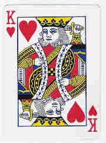
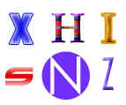
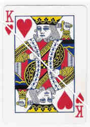
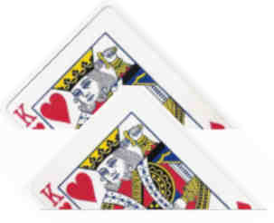

Point Symmetry
It looks the same Upside Down!
(... or from any two opposite directions*)
(... or from any two opposite directions*)
Point Symmetry

Point Symmetry is when every part has a matching part:
- the same distance from the central point
- but in the opposite direction.
It is also the same as "Rotational Symmetry of Order 2"
Point Symmetry is also called Origin Symmetry, because the central point is also called the "Origin".
Examples
|
 |
 |
|
|
Many playing cards have Point Symmetry, so that they look the same from the top or bottom. |
Each of these letters has Point Symmetry, too! |
*Same from Opposite Direction?
Yes, pick a direction, and anything with Point Symmetry will look the same from the opposite direction, too.
Example: When cut at 45° the two halves of this card are exactly the same.
In other words the view from 45°, and the opposite direction (which is 225°) are the same.
 |
 |
851, 852, 2123, 2124, 3364, 3365, 3366, 3367, 5035, 5036